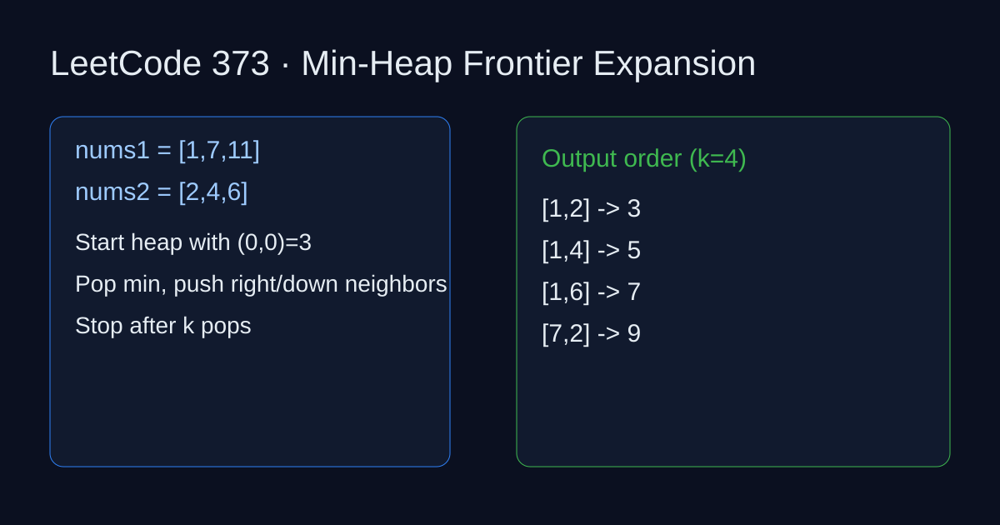

LeetCode 373: Find K Pairs with Smallest Sums (Heap)
LeetCode 373HeapSource: https://leetcode.com/problems/find-k-pairs-with-smallest-sums/

English
Treat pair sums as a sorted matrix. Seed heap with (i,0), pop the smallest, then push (i,j+1). Repeat k times.
Reference Implementations (Java / Go / C++ / Python / JavaScript)
class Solution {
public List> kSmallestPairs(int[] nums1, int[] nums2, int k) {
List> ans = new ArrayList<>();
if (nums1.length == 0 || nums2.length == 0 || k == 0) return ans;
PriorityQueue pq = new PriorityQueue<>(Comparator.comparingInt(a -> a[0]));
for (int i = 0; i < Math.min(nums1.length, k); i++) pq.offer(new int[]{nums1[i] + nums2[0], i, 0});
while (k-- > 0 && !pq.isEmpty()) {
int[] cur = pq.poll();
int i = cur[1], j = cur[2];
ans.add(Arrays.asList(nums1[i], nums2[j]));
if (j + 1 < nums2.length) pq.offer(new int[]{nums1[i] + nums2[j + 1], i, j + 1});
}
return ans;
}
} 中文
把配对和看成“行有序矩阵”，先把每行第一个元素入堆。每次弹出最小对 (i,j)，再把同一行下一个 (i,j+1) 入堆，循环 k 次即可。
多语言参考实现（Java / Go / C++ / Python / JavaScript）
class Solution {
public List> kSmallestPairs(int[] nums1, int[] nums2, int k) {
List> ans = new ArrayList<>();
if (nums1.length == 0 || nums2.length == 0 || k == 0) return ans;
PriorityQueue pq = new PriorityQueue<>(Comparator.comparingInt(a -> a[0]));
for (int i = 0; i < Math.min(nums1.length, k); i++) pq.offer(new int[]{nums1[i] + nums2[0], i, 0});
while (k-- > 0 && !pq.isEmpty()) {
int[] cur = pq.poll();
int i = cur[1], j = cur[2];
ans.add(Arrays.asList(nums1[i], nums2[j]));
if (j + 1 < nums2.length) pq.offer(new int[]{nums1[i] + nums2[j + 1], i, j + 1});
}
return ans;
}
}
Comments